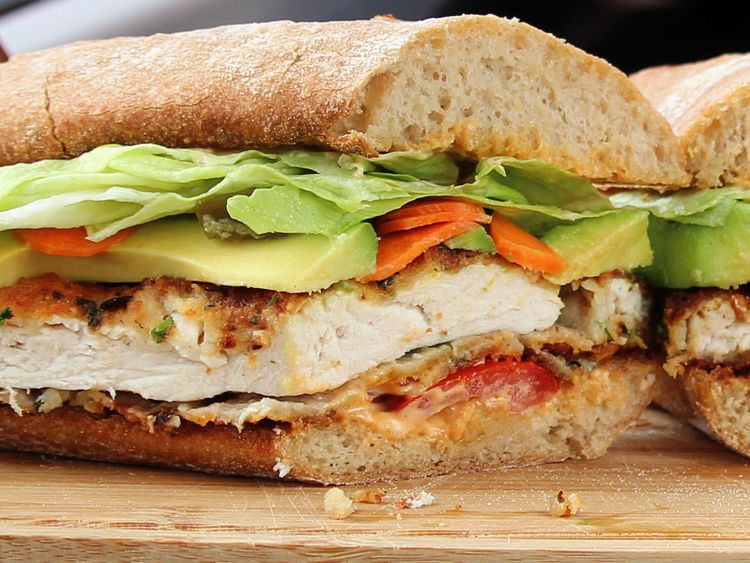

Home
Torta de Milanesa de Pollo

Description
This is a Mexican-inspired version of cotoletta alla Milanese, served on a bun and dressed with Mexican-style fixings. Spicy breaded chicken breast gets sandwiched between a toasted Mexican bun and then topped with spicy spread, avocado, lettuce, tomato, and pickled vegetables. Disclaimer! This is not my own recipe. I encourage you to go to the original recipe and support the creator. This recipe is used for educational purposes, and all images are the property of allrecipes.com
Ingredients
- 1/2 pound skinless, boneless chicken breast.
- 1 1/2 tablespoons cornstarch
- 1 egg
- 1/3 cup bread crumbs
- 2 tablespoons chopped fresh cilantro
- 1 teaspoon ground chipotle pepper
- 1 teaspoon dried Mexican oregano
- 1 teaspoon ground cumin
- 1/4 teaspoon coarsely ground black pepper
- 2 bolillo rolls, sliced in half lengthwise
- 3 tablespoons mayonnaise
- 1 tablespoon hot sauce
- 2 tablespoons sunflower seed oil
- 1/2 avocado, sliced
- 3 slices tomato
- 2 lettuce leaves
- 1 tablespoon pickled carrots
- 1 tablespoon pickled jalapeno peppers
Directions
- Preheat the oven to 250 degrees F (120 degrees C).
- Seal chicken breast in a resealable zip-top plastic bag. Pound flat to 1/4-inch thickness. Add cornstarch and shake to coat.
- Whisk egg in a shallow bowl. Dredge chicken breast thrugh egg; leave it in the bowl. Add bread crumbs, cilantro, chipotle, oregano, cumin, and pepper to the bag; shake well. Lift chicken from the bowl, letting any excess egg drip off. Add to bread crumb mixture. Shake and press seasoned bread crumbs over chicken breast.
- Place bolillo buns in the preheated oven until warmed through and toasted, about 12 minutes
- Meanwhile, mix mayonnaise and hot sauce together in a small mixing bowl.
- Heat oil in a skillet over medium heat. Cook chicken until browned, about 6 minutes per side. An instant-read thermometer inserted into the center should read at least 165 degrees F (74 degrees C). Cut chicken in half, lengthwise.
- Assemble sandwiches. Spread spiciy mayonnaise over both sides of the rolls. Add equal amounts of avocado, tomato, lettuce, carrots, and jalapaños to 2 halves. Add chicken and tops of rolls. Serve with remaining spicy mayonnaise for dipping.